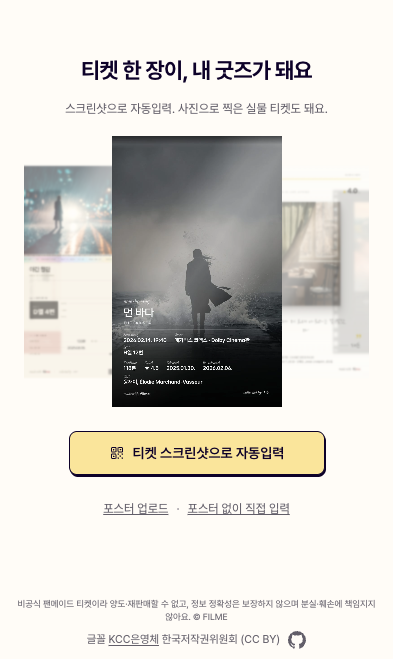
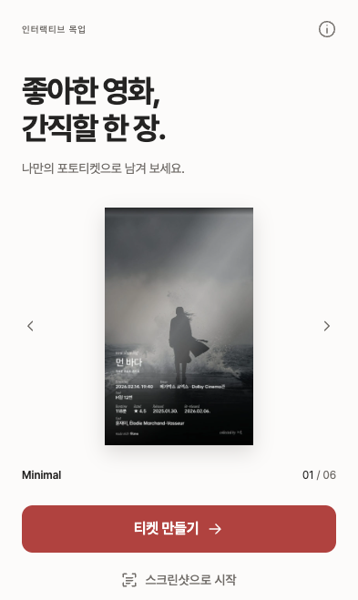
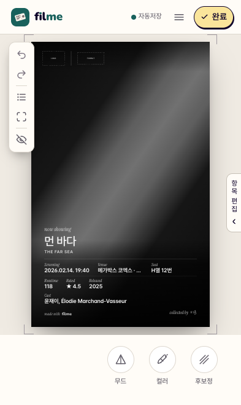
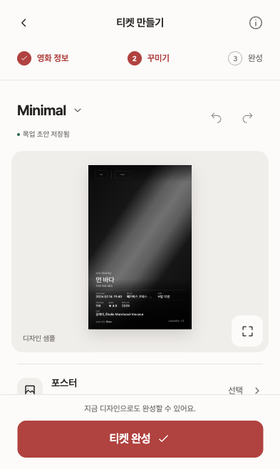
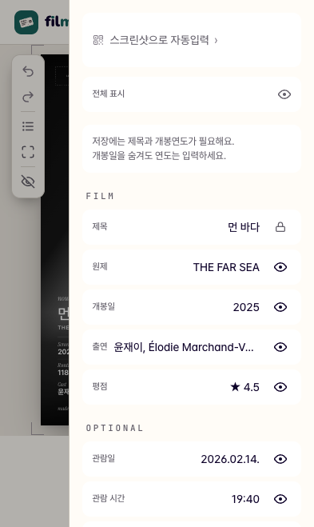
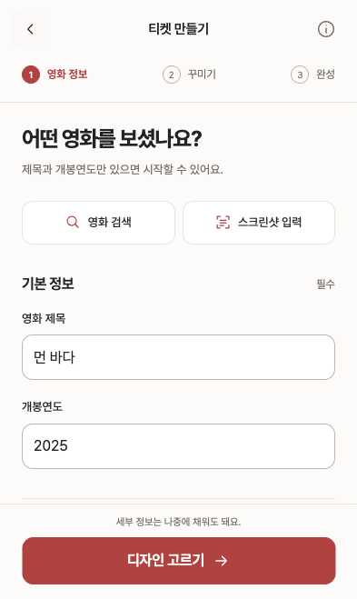

화면을 나누고, 다음 행동을 분명하게.
393 × 659px, 같은 영화 정보로 비교했어요. 편집 화면은 기존 앱에서 캡처한 동일 티켓을 새 목업에도 넣었어요. 실제 사용자 평가나 작업 시간 측정 결과는 아니에요.
인터랙티브 목업 열기시작
완성 예시와 ‘티켓 만들기’를 먼저 보여요. 스크린샷 입력은 보조 경로로 유지해요. 전후 모두 기존 랜딩 티켓 자산을 사용하지만 노출 방식은 달라요.


꾸미기
디자인 선택과 변경 취소를 상단에 모으고, 세부 옵션은 라벨 있는 행으로 정리했어요. 기본 미리보기는 작아졌고, 크게 보기는 별도로 제공해요.


정보 입력
티켓을 가리는 목록 대신, 필수 항목과 선택 항목을 구분한 폼을 사용해요. 입력과 꾸미기 사이에 화면 이동이 추가되는 점은 직접 사용하면서 평가할 부분이에요.

